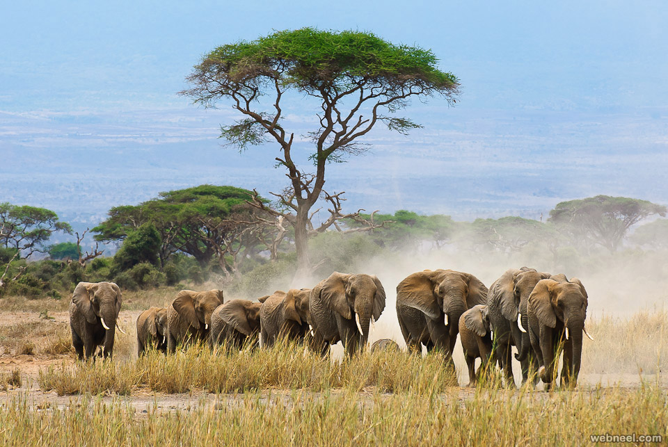

 Sri Lanka, an island nation off the coast of South India, is renowned for its rich biodiversity and stunning wildlife.
With over 4,800 plant species and a variety of mammals, birds, and reptiles, the country is a wildlife enthusiast's dream